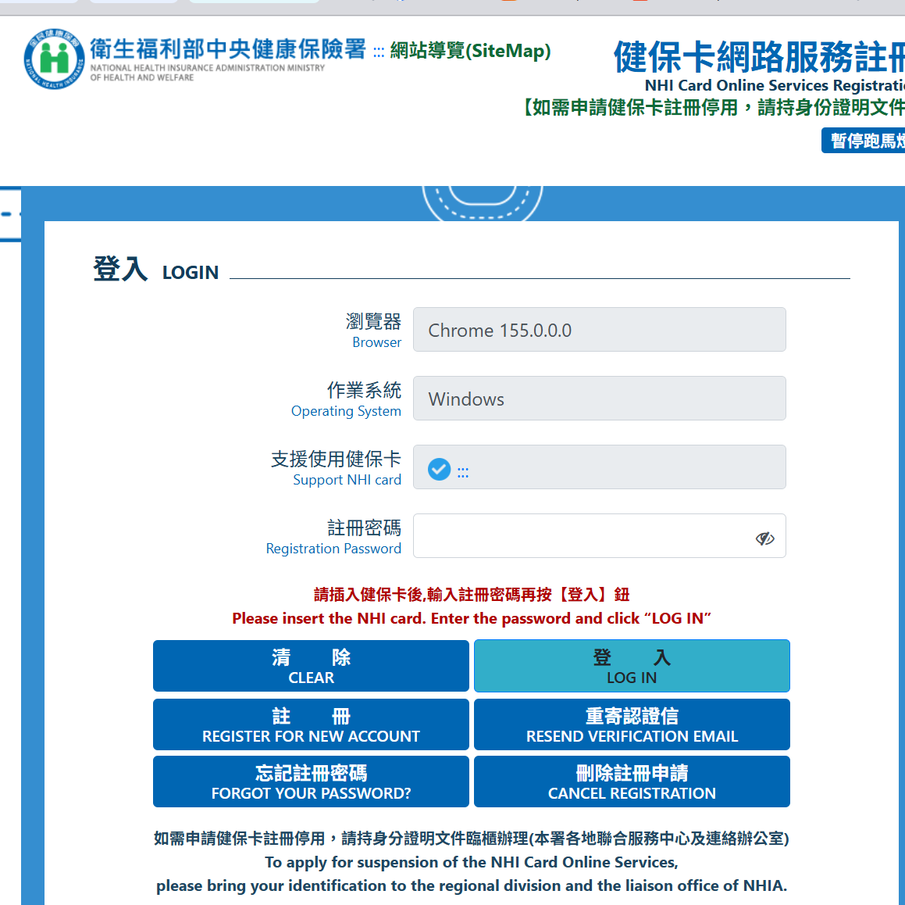
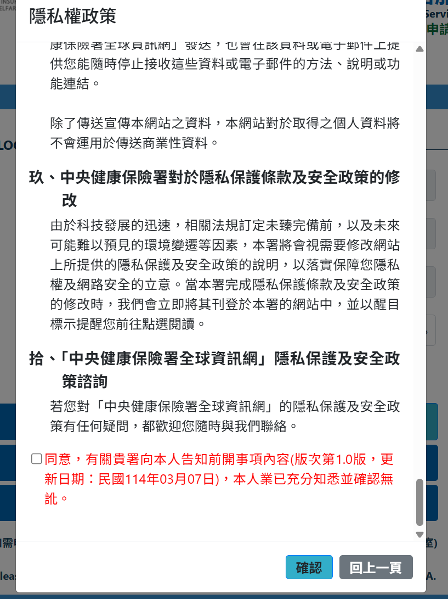
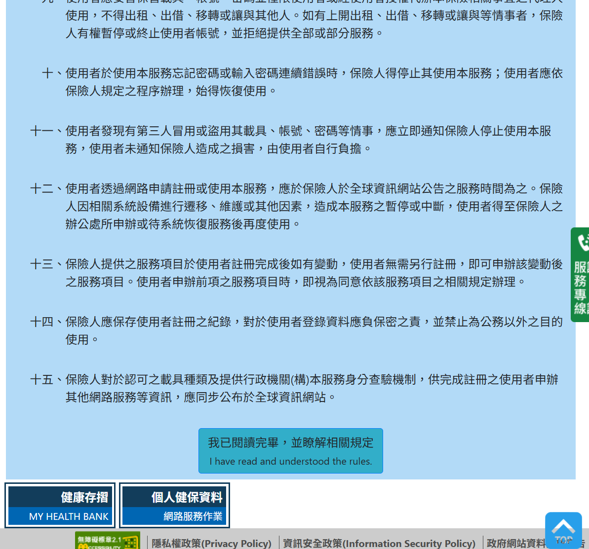
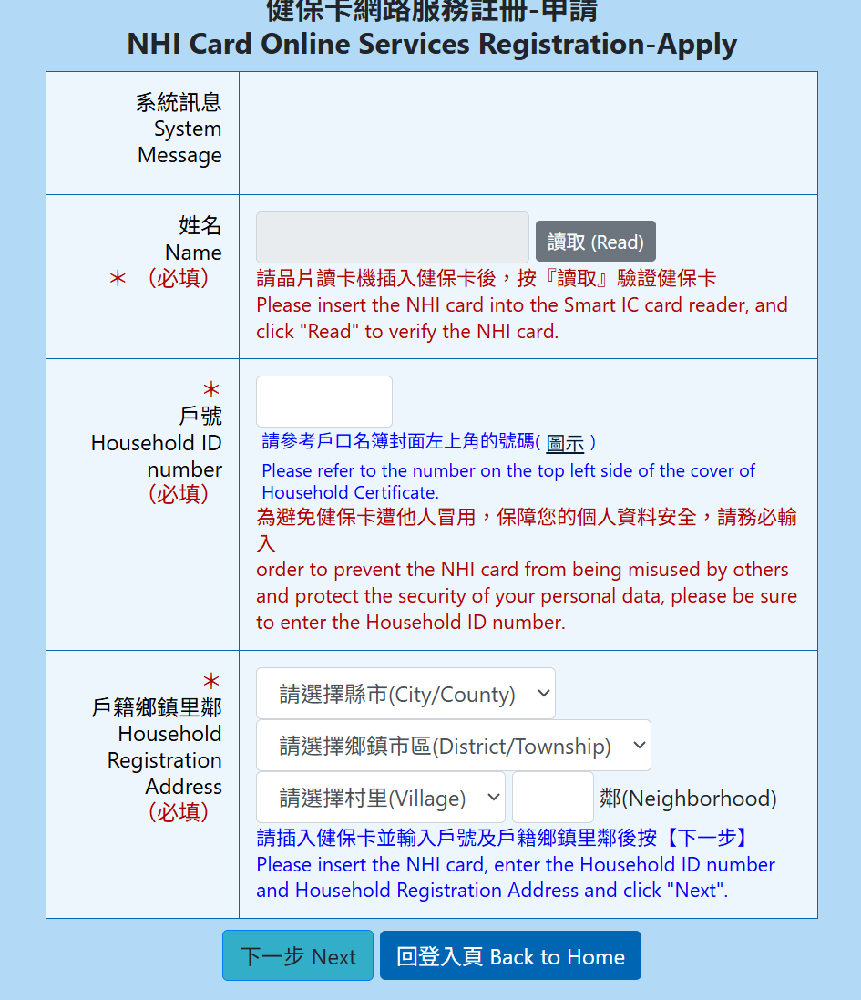
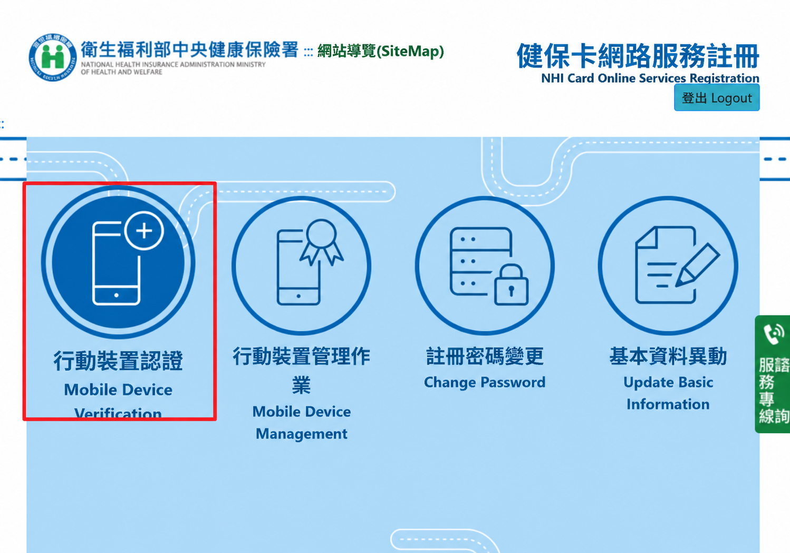

01
接上讀卡機，開啟官方網站
- 把讀卡機接到電腦，插入長輩本人的健保卡。
- 按下方連結，進入健保署官方入口。
- 看到「健保卡網路服務註冊」登入頁後，確認「支援使用健保卡」狀態。
- 第一次使用，按「註冊」。
會另開分頁，可隨時切回本教學。若入口無法開啟，可用健保卡網路服務註冊頁。

給長輩與陪伴家人的圖解教學 · 2026.10.15
我們走「裝置碼認證」。
第一次使用：先用戶號完成健保卡註冊。
註冊完成後，電腦取碼 → 手機掃描。
照著下面做，一次完成一個步驟就好。
這次要走的路線
健保卡 ＋ 讀卡機 ＋ 戶口名簿
首次先註冊 → 登入 → 產生裝置認證碼
開啟健保快易通 App
裝置碼認證 → 掃描 → 完成
本頁以你提供的「健保卡」流程為主。
開始之前
請用長輩本人的健保卡與資料，以及長輩之後要使用 App 的手機。家人可以陪同操作。
勾選只是本頁的準備提醒，重新整理後會清除；不會傳送任何資料。
A · 電腦操作
只有還沒完成「健保卡網路服務註冊」的人需要做這一段。若不確定，先看登入頁的「忘記註冊密碼」或「重寄認證信」。
會另開分頁，可隨時切回本教學。若入口無法開啟，可用健保卡網路服務註冊頁。


下一頁是服務相關規定。閱讀後捲到頁面下方，按：
接著才會進到註冊申請表。


這一段未提供截圖，依健保署官方文字說明補充。
密碼格式、信件有效時間與必填欄位，依當次官方畫面為準。收不到信時，先看垃圾郵件，再使用「重寄認證信」。
官方「申請健保卡網路服務註冊密碼」說明 ↗B · 電腦操作
登入後，在功能選單按最左側的「行動裝置認證」。圖示是一支手機加上一個「＋」。

進入行動裝置認證頁後，按下：
頁面會出現 QR Code、文字認證碼及有效期限。保持這個頁面開著，接下來換手機操作。
文字認證碼：••••••
有效期限：以當次頁面為準
C · 換到長輩的手機
電腦畫面先不要關掉。以下依官方教學補充；手機畫面可能隨 App 版本調整。
拿起長輩之後要使用的手機，確認已連上網路，開啟「健保快易通｜健康存摺」App。
若尚未安裝，從健保署官方 App 頁面查找下載資訊。
在 App 的認證選項中選擇「裝置碼認證」，依提示開啟掃描功能。
此處選的是裝置碼認證；非本人門號不走「行動電話認證」。
允許 App 使用相機，把手機對準電腦剛產生的 QR Code。
若掃不到，可改用 App 的輸入認證碼方式，輸入電腦顯示的文字認證碼。依 App 提示完成確認。
卡住了，先看這裡
先確認讀卡機已接好、卡片方向正確且插妥，再重新讀取。若官方入口顯示元件未安裝或環境檢測失敗，依官方提示處理並重開瀏覽器。仍無法讀取時，聯繫健保署客服；不要在本教學頁輸入任何個資。
「戶號」看戶口名簿封面左上角，不是身分證字號；縣市、區、村里、鄰要填戶籍資料。若近期遷戶籍或手上資料已過時，請先確認最新資料，必要時向官方客服詢問。
收不到信先檢查垃圾郵件與申請時填寫的信箱，再從登入頁按「重寄認證信」。忘記密碼則按「忘記註冊密碼」，依官方身分確認流程重設。
確認使用健保快易通 App 的裝置碼認證功能，並已允許相機權限。將整個 QR Code 放入畫面、避免反光；也可以改輸入電腦上的文字認證碼。
回到電腦的行動裝置認證頁，重新按「產生裝置認證碼」，再用新碼操作。不要掃舊截圖；有效期限以最新產生的頁面為準。
這份主流程需要電腦和讀卡機。可以請家人協助準備；若仍無法操作，向健保署詢問適合的協助方式。官方也提供自然人憑證途徑，入口是「個人健保資料網路服務作業」，與本頁健保卡註冊流程不同，請按官方指引操作。
自然人憑證使用的官方入口 ↗手機：02-4128-678 市話：0800-030-598
網站服務時間與客服資訊，以官方公告為準。
本頁為家人整理的操作教學，非健保署官方網站。不收集身分證字號、戶號、密碼或認證碼；實際輸入與認證請在官方網站及 App 完成。
整理日期：2026 年 10 月 15 日。網站和 App 畫面可能更新，按鈕名稱及欄位以當下官方畫面為準。